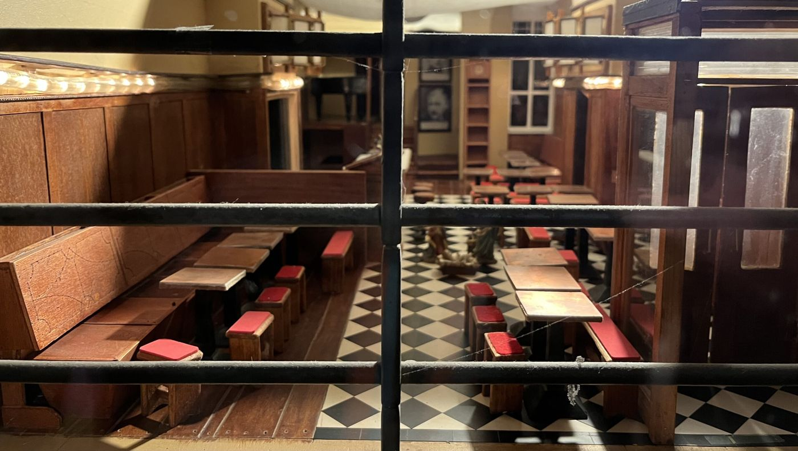
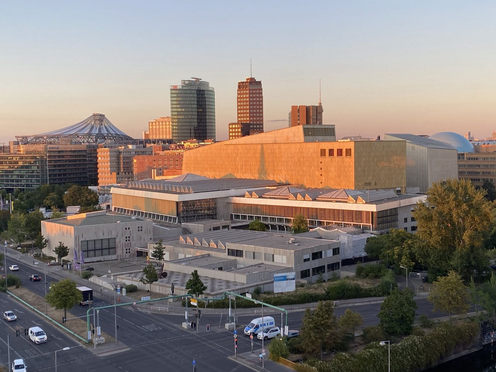

Essen, dann Kultur
Diele und Kulturforum
Abends, etwa 15 Minuten zu Fuß von der Pohlstraße. Erst essen, dann ein Haus.
Essen. Joseph-Roth-Diele, Potsdamer Straße. Das Glas vor dem Kulturforum. Öffnungszeiten
Stopps
- Joseph-Roth-Diele Öffnungszeiten

Weihnachten und Silvester geschlossen: Die Joseph Roth Diele macht Ferien … - Kulturforum

Jung, aber Denkmal: Kulturforum
Gelesen
Zwei Beiträge halten die Joseph-Roth-Diele fest, und sie tun das sehr verschieden. Am 1. Mai 2024 steht die Diele in einem größeren Gedenken. Am Wochenende vor dem 79. Jahrestag der Befreiung, dem 8. Mai 1945, also am 4. und 5. Mai, erinnert „Denk Mal Am Ort“ mit 27 Veranstaltungen an Wohn- und Wirkungsstätten von Berlinerinnen und Berlinern, die in der NS-Zeit verfolgt wurden oder Widerstand leisteten. 14 Nachkommen reisen aus Amerika, Großbritannien, Argentinien, Spanien, den Niederlanden, Frankreich und Israel an. Ausstellungen, Erzählungen, Vorträge, Gedenkspaziergänge, Rundgänge, Lesungen, eine Performance, akustische Stolpersteine, zwei Zeitzeugengespräche. Der Eintritt ist überall frei. An der Potsdamer Straße erinnert am Samstag um 14 Uhr eine szenische Lesung an Joseph Roth und Friederike Roth-Reichler. Roth, geboren 1894 im damaligen Österreich-Ungarn, Journalist, Chronist, Romanautor, Gegner des Nationalsozialismus, lebte von 1920 bis 1933 in Berlin und verließ das Land am Tag der Ernennung Hitlers zum Reichskanzler. Andrea Schultz und Günter Schmidt lesen vor der Diele, Potsdamer Straße 75. Im Nebenhaus haben der Schriftsteller und seine Frau einige Jahre gelebt. Die Initiative geht auf OPEN JEWISH HOMES zurück. Marie Rolshoven hat das Projekt 2016 nach Deutschland geholt und das Gedenken auf alle NS-Verfolgten erweitert. Im Januar 2024 erhält sie den Obermayer Award.
Ende Dezember 2024 ist dieselbe Diele geschlossen, Weihnachten und Silvester. Für das Schaufenster zur Potsdamer Straße hat sie ein kleines Sichtfenster in die sonst nicht einsehbare Scheibe gesetzt. Dahinter steht ein leeres Restaurant im Puppenstubenformat, dem Original nachgebildet, und ein Wunsch für die Feiertage.
Danach, in den Beiträgen, liegt das Kulturforum, und die Stücke behandeln es als unfertige Stadtlandschaft, nicht als einen einzelnen Abend. „Jung, aber Denkmal“, angekündigt für den 4. November 2025 in der Urania, Kleist-Saal, An der Urania 17, formuliert die Nachkriegsvorstellung so: locker gruppierte Großbauten, weite Freiflächen, eine offene, fließende Stadtlandschaft. Hans Scharouns Philharmonie und Staatsbibliothek und Ludwig Mies van der Rohes Neue Nationalgalerie gelten dort als Ikonen der Nachkriegsmoderne. Das Forum blieb unvollendet. Ein Konsensplan Kulturforum werde als Leitbild erarbeitet. Mit der Generalinstandsetzung der Staatsbibliothek stehe die nächste Großbaustelle an. Einführung: Christoph Rauhut, Landeskonservator. Auf dem Podium Petra Kahlfeldt, Katja Erke, Achim Bonte, Stephan Schütz und Jürgen Tietz, Moderation Verena Pfeiffer-Kloss. Veranstalter sind das Landesdenkmalamt und die Architektenkammer, mit der Urania.
Ein Jahr später, am 13. September 2026, wird dasselbe Gelände zum fünften Mal ein „Tag im Grünen“, drinnen und draußen, am Tag des offenen Denkmals, mit der Architektur als Schwerpunkt. Die Häuser und die St. Matthäus-Kirche laden ein. Marion Ackermann, Präsidentin der Stiftung Preußischer Kulturbesitz, sagt, der Tag zeige die Vielfalt der Einrichtungen und die Zusammenarbeit über Institutionsgrenzen hinweg. Das Kulturforumsticket kostet an dem Tag 12 Euro, ermäßigt 6, statt 22 und 11. Wer eine Jahreskarte hat, kann eine Person mitbringen. Kinder und Jugendliche bis 18 Jahre haben wie sonst freien Eintritt. Draußen steht Berlins längste Tafel auf dem Scharounplatz. Wer kein Picknick mitbringt, findet Essen auf dem Gelände. Mitglieder der Karajan-Akademie spielen Kurzkonzerte auf der mobilen Bühne VeloStage. Das Künstlerkollektiv Bündnis Feuer & Flamme stellt eine offene Küche hin. Junge Berliner Bands spielen auf dem Scharounplatz. Führungen, Workshops und Ausstellungen in Gemäldegalerie, Kunstgewerbemuseum, Kupferstichkabinett, Kunstbibliothek und Neuer Nationalgalerie. Das Staatliche Institut für Musikforschung führt durch das Musikinstrumenten-Museum und das Institutsgebäude und jodelt danach auf der Dachterrasse. Im Ibero-Amerikanischen Institut läuft „Quadrinhos! – Brasilianische Comics in Berlin“, dazu ein Konzert. Die Staatsbibliothek führt durch ihr Haus Potsdamer Straße. St. Matthäus bietet Turmführungen, Vorträge, Workshops und einen Gottesdienst unter freiem Himmel. Die Baumschule Kulturforum gestaltet den Scharounplatz mit. Das Wissenschaftszentrum öffnet sein denkmalgeschütztes Gebäude. Dazu Rundgänge: architekturhistorisch, Urban Sketching, Photo-Walk.
In derselben Woche ist der Garten der Berlin Art Week am Kulturforum zu Gast, zwischen Neuer Nationalgalerie und Gemäldegalerie. Der Beitrag vom 1. September 2026 beschreibt das 15-jährige Jubiläum der Art Week: fünf Tage, vom 9. bis 13. September, wird das Areal zwischen Potsdamer Platz, Tiergarten und Landwehrkanal zum Treffpunkt. Workshops, Performances, DJ-Sets, Talks, Screenings, kostenlos und offen. Ein LeseGarten zum Ankommen. Der Garten bündelt das Festival: Routen durch die Stadt, mehr als 100 Partner, mehr als 300 Veranstaltungen, darunter über 100 Ausstellungseröffnungen. Am 10. September laden 54 Galerien des Gallery Weekend von 18 bis 22 Uhr zur Gallery Night. Die Ausstellungen sind von Freitag bis Sonntag jeweils von 12 bis 18 Uhr geöffnet. Mittwoch die Eröffnungen in Museen und Kunstvereinen, Donnerstag die Positions Berlin Art Fair und die Gallery Night, Freitag die Featured Night, am Wochenende Privatsammlungen.